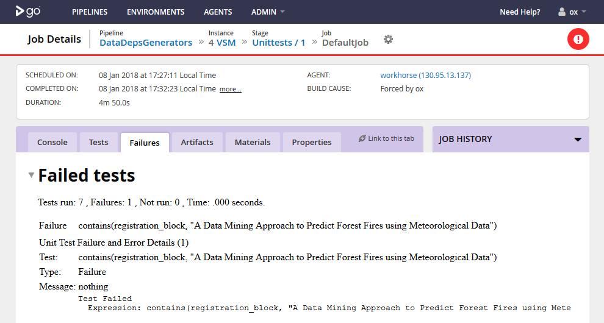

TestReports.jl
A JUnit XML test report generator for Julia
This package produces JUnit XML test reports. It is for use with your CI tooling of choice, for example a CI tool like GoCD consumes reports in this format and gives back HTML reports.
Getting Started
The reporting is designed to enable you to write your unit tests in the standard Julia way, that is using test/runtests.jl as the entry point to your tests and with default TestSet types. In theory, it should also work with custom TestSet types - see the Manual for further information.
To test and generate a report for your package:
julia> TestReports.test("MyPackage")
# Unit tests run, report saved to testlog.xml in current working directoryTo add to CI:
$ julia -e 'using Pkg; Pkg.add("TestReports"); using TestReports; TestReports.test("MyPackage")'Additionally, properties can be added to your TestSets. To do this, use the recordproperty function like so:
using Test
using TestReports
@testset "MyTests" begin
recordproperty("ID", 1)
@test 1==1
endThe JUnit XML Schema
The JUnit XML schema is a format used by many CI tools. For a definition of the schema, see here.
For reports generated by TestReports.jl, the timestamp attribute of testsuite elements will be in the local system timezone.
Example of Use
Below is a screen shot of TestReports being used with GoCD, to report an test failure in DataDepsGenerators.jl.

The corresponding testlog.xml file (produced with an earlier version of TestReports, and therefore missing some of the new features, and after pretty printing) is below.
<?xml version="1.0" encoding="UTF-8"?>
<testsuites name="/UCI" id="now" tests="7" failures="1" errors="0">
<testsuite name="" id="_id_" tests="1" failures="0" errors="0">
<testcase name="pass (info lost)" id="_testcase_id_"/>
</testsuite>
<testsuite name="" id="_id_" tests="1" failures="0" errors="0">
<testcase name="pass (info lost)" id="_testcase_id_"/>
</testsuite>
<testsuite name="" id="_id_" tests="1" failures="0" errors="0">
<testcase name="pass (info lost)" id="_testcase_id_"/>
</testsuite>
<testsuite name="" id="_id_" tests="1" failures="0" errors="0">
<testcase name="pass (info lost)" id="_testcase_id_"/>
</testsuite>
<testsuite name="" id="_id_" tests="1" failures="0" errors="0">
<testcase name="pass (info lost)" id="_testcase_id_"/>
</testsuite>
<testsuite name="ForestFires" id="_id_" tests="2" failures="1" errors="0">
<testcase name="contains(registration_block, "A Data Mining Approach to Predict Forest Fires using Meteorological Data")" id="_testcase_id_">
<failure message="nothing" type="test">Test Failed
Expression: contains(registration_block, "A Data Mining Approach to Predict Forest Fires using Meteorological Data")</failure>
</testcase>
<testcase name="pass (info lost)" id="_testcase_id_"/>
</testsuite>
</testsuites>